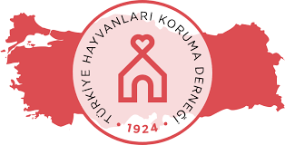

As a volunteer student of Ver Bi ’Pati project, Istanbul Technical University Volunteering Club is a student club that deals with the living needs and health problems of the animals on our campus and works to improve living conditions through reproductive control and ownership.

Türkiye Hayvanları Koruma Derneği
The association was founded in 1912 by American Alice Manning. The group was known as "Compassion arms" (Arms of Mercy) which was the Turkey's first animal welfare group.